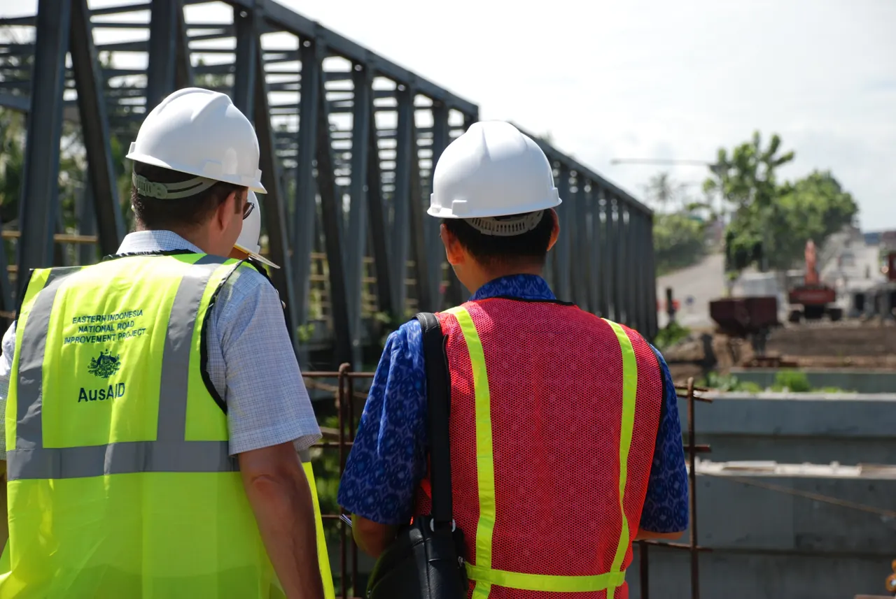
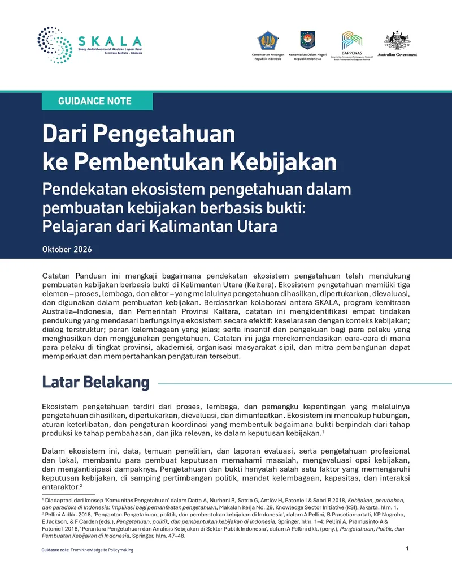
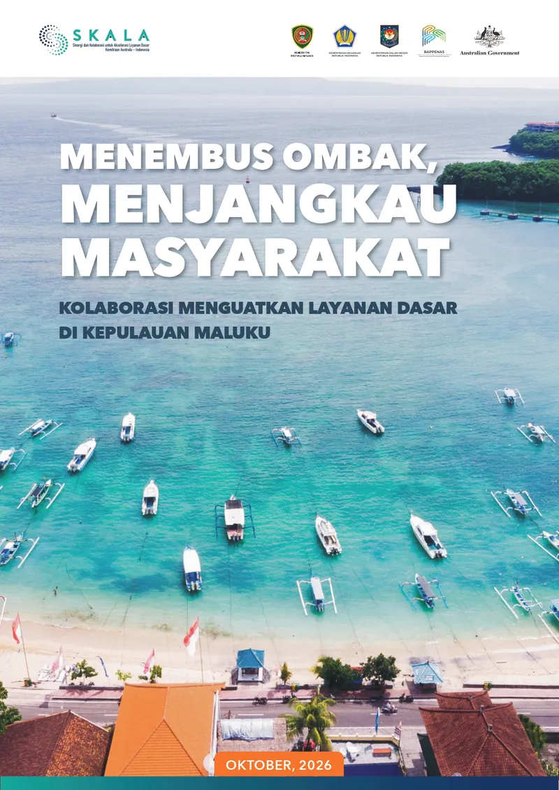

Regulasi dan standar
Memperkuat kerangka kebijakan Pengelolaan Keuangan Publik dan Standar Pelayanan Minimal di daerah.
SKALA · Kemitraan Australia–IndonesiaIFC Tower 2 Lt. 17, Jl. Jend. Sudirman Kav. 22–23
Jakarta 12920 | info@skala.or.id
Kemitraan Australia–Indonesia untuk layanan dasar yang sampai ke warga miskin dan rentan.
Kenali SKALAKebijakan, perencanaan, dan anggaran yang terhubung dari kementerian hingga kabupaten.
Penguatan Tata KelolaData terkonsolidasi untuk memetakan penerima layanan dan menganggarkan tepat sasaran.
Sistem DataPerempuan, penyandang disabilitas, dan kelompok rentan ikut merencanakan layanan dasar.
Lihat DampakLaporan, ringkasan kebijakan, dan pembelajaran dari kerja bersama di 12 provinsi.
Jelajahi Pusat PengetahuanDari kebijakan menjadi
layanan yang dirasakan.
SKALA bermitra dengan Kemendagri, Kemenkeu, dan Bappenas untuk mengurangi kemiskinan dan ketimpangan. Kami memperkuat perencanaan, penganggaran, dan data agar layanan dasar sampai ke warga miskin dan rentan.

JakartaTujuan
Mendukung pengurangan kemiskinan dan ketimpangan di Indonesia melalui peningkatan ketersediaan layanan dasar bagi masyarakat miskin dan rentan di daerah tertinggal.

01Layanan dasar
Kementerian dan lembaga menyusun kebijakan, rencana, dan anggaran yang lebih baik untuk memperkuat layanan dasar di daerah tertinggal.

Pemerintah provinsi dan kabupaten sasaran mampu merencanakan, menganggarkan, dan mengelola layanan dasar secara lebih efektif.

Perempuan, penyandang disabilitas, dan kelompok rentan terwakili dan ikut menentukan perencanaan serta keputusan layanan dasar.

Dua belas provinsi dari Aceh hingga Papua: sepuluh lokasi intervensi utama dan dua lokasi tambahan yang graduasi dalam satu periode. Peta, profil, dan capaian tiap provinsi ada di halaman Wilayah Kerja.
Lihat wilayah kerja
Pendekatan
Layanan dasar membaik ketika seluruh sistemnya bekerja bersama, bukan hanya satu bagian. Karena itu SKALA bekerja di empat lini sekaligus.
Lihat programMemperkuat kerangka kebijakan Pengelolaan Keuangan Publik dan Standar Pelayanan Minimal di daerah.
Membantu provinsi dan kabupaten merencanakan dan menganggarkan layanan dasar dengan lebih efektif.
Sistem data terkonsolidasi seperti SIKOMPAK dan SEPAKAT mendukung keputusan berbasis bukti.
Perempuan, penyandang disabilitas, dan kelompok rentan ikut menentukan arah layanan di daerah.
EOPO 3
Partisipasi, representasi, dan pengaruh yang lebih kuat dari perempuan, penyandang disabilitas, dan kelompok rentan
Lihat capaianProvinsi sasaran
Provinsi sasaran: 12
Capaian akhir (EOPO)
Capaian akhir (EOPO): 3
Capaian antara (IO)
Capaian antara (IO): 9
Komitmen hingga AUD
Komitmen hingga AUD: 160 jutajuta
Durasi program
Durasi program: 8 tahuntahun
Wilayah kerja
Pilih provinsi untuk melihat fokus program di wilayah tersebut.
Jelajahi wilayah kerjaFokus program
(05) Kegiatan & publikasi




(06) Siniar
Video siniar ini belum tersedia di prototipe.[ID video YouTube menunggu dari klien]
Tonton di skala.or.id (membuka tab baru)Diperkirakan, pada 2045, jumlah lansia di Indonesia akan mencapai lebih dari 65 juta jiwa. Apa saja strategi dan program yang dijalankan pemerintah untuk menghadapi tantangan ini? Temukan jawabannya bersama Direktur Penanggulangan Kemiskinan dan Pemberdayaan Masyarakat Kementerian PPN/Bappenas hanya di Obrolan K, obrolan penuh makna!
“Berkat dukungan SKALA yang memberikan strategi baru untuk perbaikan tata kelola data melalui portal Open Data Aceh, yang ditargetkan 2 tahun dapat rampung dalam kurun waktu 6 bulan.”
“Terbukti dengan bantuan SKALA, capaian SPM Provinsi NTT sudah mulai membaik. Hal ini merupakan bukti nyata pentingnya dukungan Kemitraan Pemerintah Australia melalui SKALA.”
“Terima kasih atas kerja keras SKALA yang telah memberikan pendekatan dan dukungan program dalam pengembangan dan optimalisasi pemanfaatan Satu Data Kaltara, sehingga menjadi lebih sistematis dan efektif.”
 Bertius, S.Hut. TPlt. Kepala Bappeda dan Litbang Provinsi Kalimantan Utara
Bertius, S.Hut. TPlt. Kepala Bappeda dan Litbang Provinsi Kalimantan Utara